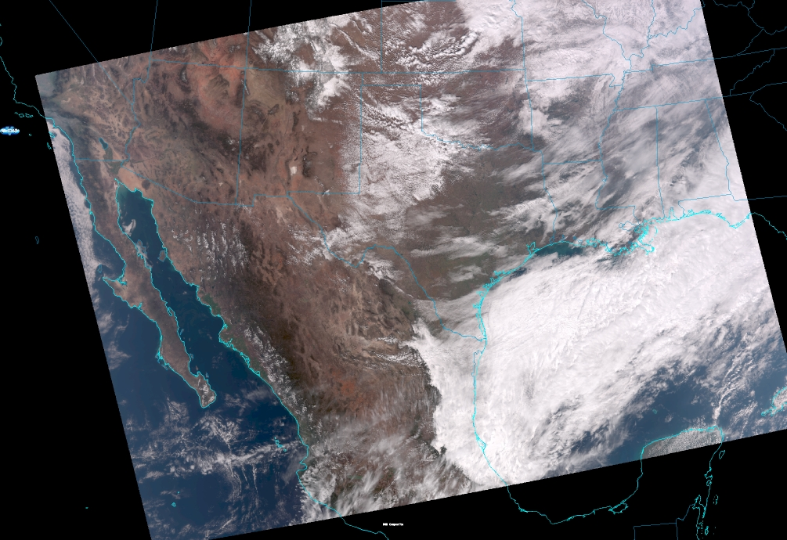
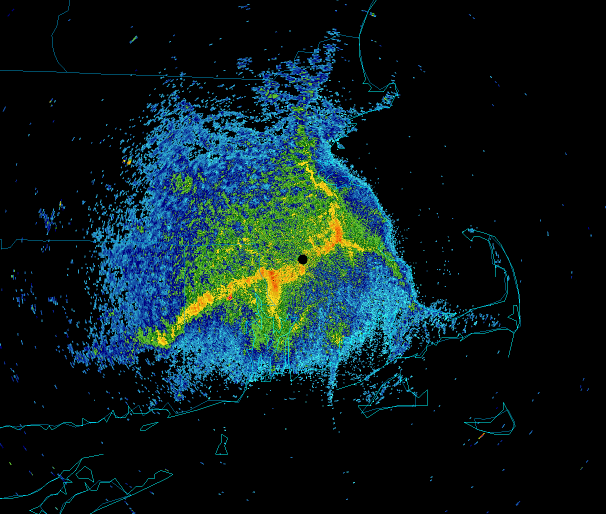

McIDAS-V
What is McIDAS-V?
McIDAS, short for "Man computer Interactive Data Access System," is a meteorological data delivery, visualization, and analysis software package developed at the University of Wisconsin-Madison's Space Science and Engineering Center (SSEC). McIDAS-V is the free and open-source version of McIDAS written mostly in Java. Links for more information:
I have been helping develop McIDAS-V and this page is a small collection of interesting features, bugs, and enhancements that I have worked on. Almost all of the following are associated with a number which corresponds to an inquiry in the internal inquiry database at the SSEC.
[3055] Rayleigh Correction
Rayleigh Scattering Scattering of electromagnetic waves (like sunlight) due to interactions with molecules of oxygen and nitrogen that are much smaller than its wavelength. This is why the sky looks blue! Rayleigh scattering introduces a “haze” especially in visible wavelengths (mostly under 700 nm), which can interfere with interpreting surface reflectance. The removal of this scattering component is thus Rayleigh Correction.

I was responsible for making this work! I have a page dedicated to it which contains demos and this work was featured during the McIDAS Users’ Group Meeting in May 2025.
[1935] Max over time steps and Float.NaN
Min/Max are some of the most fundamental operations in programming languages which, simply, takes two or more elements and finds the minimum/maximum of the given set. Java, unsurprisingly, has its own version for both: Math.min and Math.max. For the most part, they behave as you'd expect them to however, interestingly, if they are given NaN as a value to compare, the functions always return NaN.
Some datasets include null values to represent missing data and as such should be ignored but due to how Math.max and Math.min operate, they would override genuine data and leave blank spots in displays. To get around this, I wrote missingMax and missingMin that set NaN to Float.MIN_VALUE and Float.MAX_VALUE respectively which allows non-missing data to be take precedent over missing data.
The most obvious difference was that L2 radar displays (like here in the image) looked a lot more populated than they did before.
[2803] Organizing viewpoints
A 'viewpoint' in McIDAS refers to a point used to look at a specific section of the world map. For example, if you wanted to look at the a region around Madison, you'd probably look at a latitude range between 42° and 44° north and longitude range between 88° and 90°. While the software package offers a pretty big selection of predefined viewpoints, it also allows users create custom viewpoints (I also helped with this! [3151]) and save them for future use.
Originally, these custom viewpoints appeared in a list in the order they were created, which, for a variety of reasons, was less than ideal. The ticket asked for these viewpoints to be sorted alphabetically but it included a suggestion: to create 'folders' for viewpoints. As such, I created a system that would take any viewpoint named in the format "folderName>vpName" and add it to that folder, if it exists, and creating it first if it didn't.